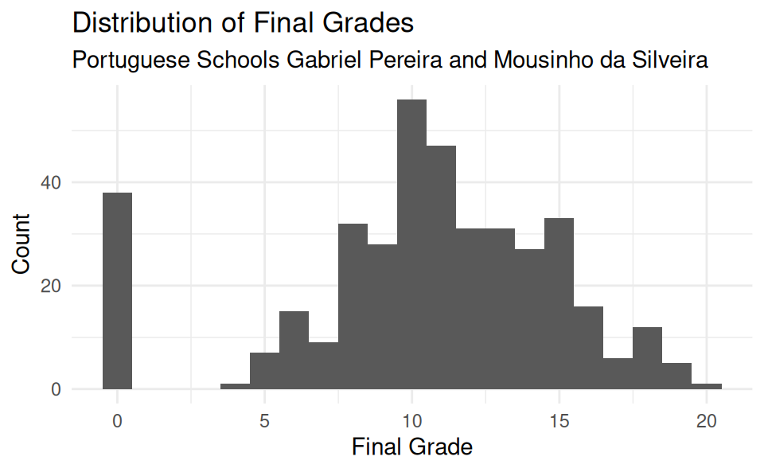
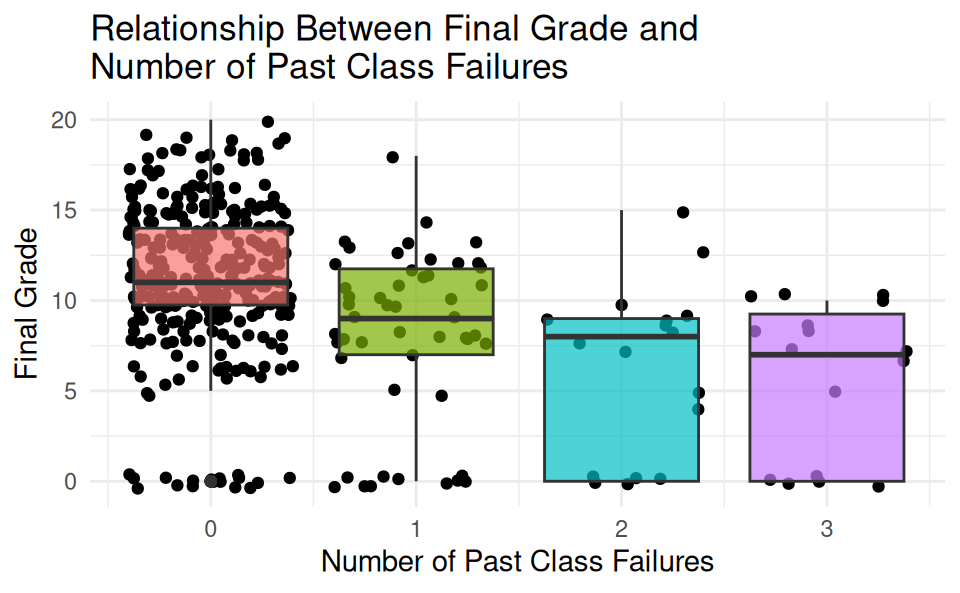
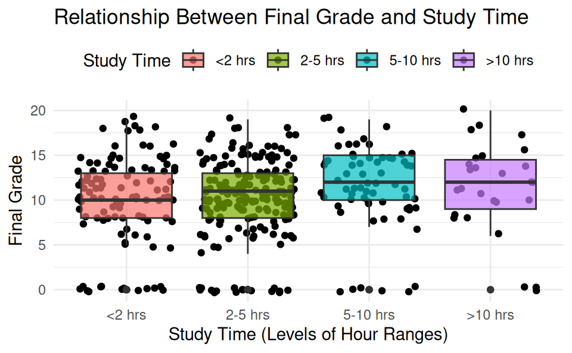
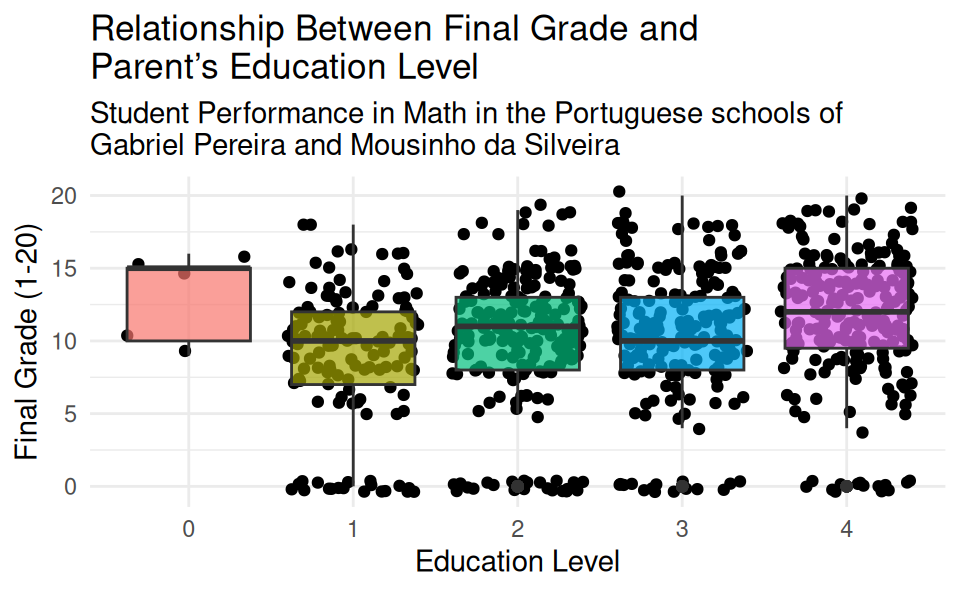
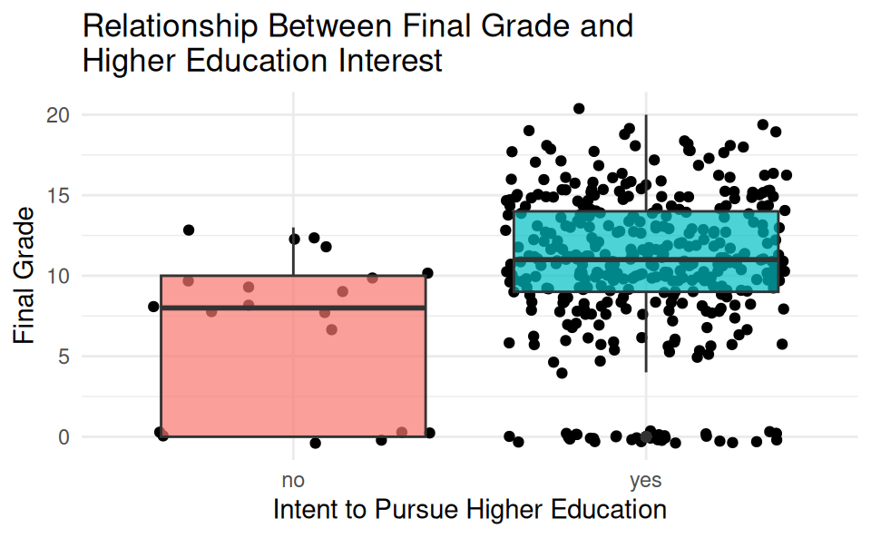

Determining Key Factors Influencing Student Math Performance in Portuguese Secondary Education
Report
Abstract
This project will analyze data from the Portuguese schools, Gabriel Pereira and Mousinho da Silveira, to determine which factors most strongly influence students’ academic performance in mathematics. By comparing demographic variables, such as parent education level and quality of family relationships, and academic variables, such as number of past class failures and extra paid classes, the research will seek to identify key predictors of student success. Many side-by-side boxplots were analyzed to examine any trends between changes in final grade and the explored predictor variables. It was found that a low number of previous class failures and interest in higher education were the largest indicators of success. Our results suggest that education systems should consider focusing on areas related to these two indicators to maximize academic performance.
Introduction
In the early 2000s, Portugal’s education system was falling behind the rest of Europe, evidenced by its high student failure rates (Cortez and Silva 2008). In April 2008, Paulo Cortez and Alice Silva published a study analyzing student achievement in the secondary education of two Portuguese schools. The data were collected through school reports and questionnaires that included information such as student age, sex, address, job, and health. Though no ethical concerns are explicitly stated in the dataset, some variables are personal identifiers that could be used to trace back to specific people. For instance, parental status, age, sex, and home type could potentially reveal individuals’ identities. The data are currently publicly stored in the UC Irvine Machine Learning Repository. To better understand what contributed to Portugal’s shortcomings in education, the following research seeks to understand which demographic and academic factors most correlate with academic success.
Data
In order to analyze which factors are most predictive of student success in Gabriel Pereira and Mousinho da Silveira, the dataset edu_achievement was used, which contains information on the students’ background factors and academic performance. The outcome variable, G3, represents the students’ final grades.
The following 12 variables were explored: interest in higher education, number of past class failures, alcohol consumption during weekdays and the weekend, study time, internet access, health status, family relationship strength, mother and father education level, extra paid classes, and free time. To visualize the relationship between G3 parent education level, the Medu (mother’s education level) and Fedu (father’s education level), pivot_longer() was used to combine the two education levels into a single education column.
Analysis
First, we plotted a histogram of the counts of final grades to visualize a general distribution of final grades from the dataset, as shown in Figure 1. The histogram shows a slight right-skewed distribution with a large number of potential outliers, each with a final grade of 0. However, we speculate that these 0s are due to the high frequency of students dropping out of school, which leads to an incomplete final grade of 0. We decided not to remove the observations with final grades of 0 because of their prevalence and low chance of resulting from data collection errors, given that the information for all the variables was complete for those observations. Furthermore, we believed they could be meaningful when analyzing the influence of our target predictor variables. The center of the distribution is at a median of 11, which served as a baseline for our future plots.
After reviewing plots for each predictor variable, we observed that the following variables showed some correlation with final grade performance: interest in higher education, number of past class failures, study time, and parent education level.
Figure 2 displays how the typical final grade, depicted as the median, decreases as the number of past class failures increases.

Figure 3 reveals a slight increase in the typical final grade as amount of study time increases, although not substantial enough to be among the strongest factors.

Figure 4 displays how there is a variable trend of student performance with regard to parent education level. The median final grade for students whose parent has no education is higher than the rest, but there are only a few points of data where parent education is none, making the pattern difficult to confirm. Nonetheless, the trend is not strong enough to be considered one of the strongest factors of student performance.

Figure 5 reveals a trend where students who expressed interest in pursuing higher education had a higher final grade, as seen by the increased median.

Discussion
Our analysis suggests that the strongest indicators of student success, as measured by final math grades, were interest in pursuing higher education and a low number of past class failures. Students who intended to continue their education beyond secondary school tended to achieve higher grades, possibly reflecting greater academic motivation and a higher level of long-term planning. On the other hand, students with a history of course failures tended to perform worse, which could indicate underlying struggles such as poor studying strategies or procrastination.
Interestingly, some factors that might be presumed to have a strong effect on math performance, such as participation in paid extra classes and the amount of alcohol consumption, showed little to no correlation with final grades. These findings suggest that traditional methods for improving educational performance, such as supplementary instruction and alcohol awareness programs, may not apply to all educational contexts and that student motivation and performance history may be far more influential than access to additional academic resources alone. People should exercise caution when making presumptions about which factors most strongly influence academic achievement because they can be misguiding.
The results offer a number of applications for educators and policymakers. Attempts to boost interest in pursuing higher education could yield substantial improvements in student performance. Some examples include raising awareness of the benefits of continuing education, reorienting school curricula to encourage academic exploration and the discovery of academic passions, or rewarding academic achievement. Additionally, schools might consider developing support programs that target students with a history of class failures. These programs could, for instance, offer students accountability and help them build or regain confidence. By investing resources that address the strongest factors for educational performance, identified as interest in higher education and the number of past class failures, educational institutions can achieve the highest return on intervention measures.
While our analysis provides meaningful insights, limitations naturally arise. The data we analyzed were limited to math performance among secondary students in two Portuguese schools during the 2005-2006 school year, which reduces the generalizability of our conclusions to other subjects, regions, and educational systems. Furthermore, the data were collected through self-reported questionnaires, which may not fully capture students’ true behaviors, attitudes, or study habits.
The final grade (G3) metric may not account for other important outcomes such as problem-solving or critical thinking skills. Additionally, our analysis did not fully consider the interactions between variables, such as how parental education and school support might jointly influence performance. Since our data are correlational, we cannot infer causation from our analysis. Branching off from that idea, our analysis did not examine whether interest in pursuing a higher education enhances academic performance or whether interest is a result of high academic performance.
References
Cortez, Paulo, and Alice M. G. Silva. 2008. “Student Performance Data Set.” UCI Machine Learning Repository. https://doi.org/10.24432/C5TG7T.